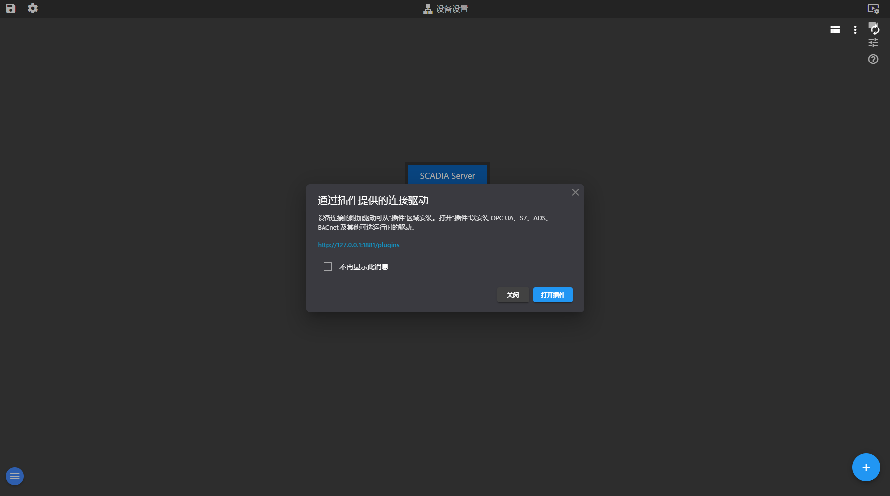

设备模块管理平台与现场数据源之间的通道：把 PLC、OPC UA 服务、MQTT、REST、数据库等接进来，并定义可读写的点位（标签）。

设备与数据源（当前交付版实际截图）
| 区域 | 实际内容 |
|---|---|
| 按钮 / 图标 | 保存项目、编辑项目、视频墙、视频监控、传感器标定、开诚智枢帮助、add、clear、link、edit、more_vert、autorenew、view_list、关闭、打开插件 |
| 列表表头 | add、名称、通道、地址、设备、类型、值、时间戳、描述、clear |
| 表单字段 | 不再显示此消息 |